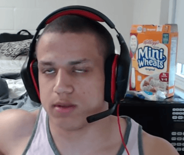
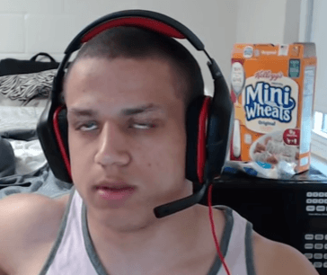

An online bully that got extremely popular because of the game, League of Legends.
The reason he got popular is because he was really good at a specific character and he was funny.
After getting permanently banned from League of Legends because of his toxicity, he moved on to streaming full-time on twitch.tv.
He branched out to other games such as H1Z1: King of the Kill, Dark Souls, Dishonored, Arma 3, and etc.
Nowadays, he continues streaming on twitch.tv and gets many thousands of viewers everytime he goes live.